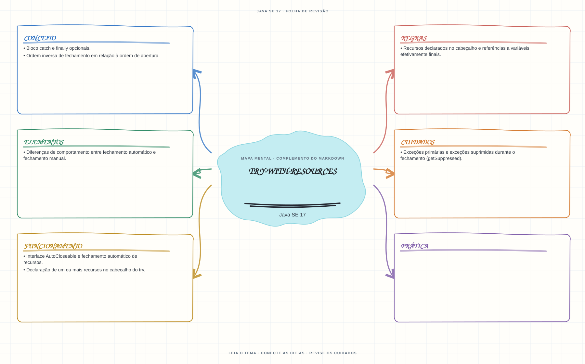

Ver mapa mental deste assuntoAplicar fechamento automático e interpretar a ordem de fechamento e as exceções suprimidas.
Aprofundamento e revisão 1Z0-829: use esta página depois dos fundamentos. Os tópicos de prova complementam a trilha inicial e não são pré-requisitos para começar a programar.
- Leia o objetivo e localize a ideia principal no conteúdo abaixo.
- Preveja o resultado, compile e execute o exemplo.
- Faça a atividade sem copiar a solução e confira a checagem comentada.
EXEMPLO DE CONSOLE
Veja a regra em execução
Antes de executar, anote sua previsão. Compile o exemplo com o JDK e compare a saída observada com as regras deste assunto.
Comandos para compilar e executar
javac -d target/bin src/04-excecoes/try-with-resources/TryWithResourcesExample.java
java -cp target/bin TryWithResourcesExampleA execução imprime o resultado no console para você comparar com sua previsão.
Consultar código-fonte: TryWithResourcesExample.java
public class TryWithResourcesExample {
private static class Recurso implements AutoCloseable {
private final String nome;
Recurso(String nome) {
this.nome = nome;
System.out.println("Abrindo recurso " + nome + ".");
}
public void usar() {
System.out.println("Usando recurso " + nome + ".");
}
@Override
public void close() {
System.out.println("Fechando recurso " + nome + ".");
}
}
public static void main(String[] args) {
System.out.println("=== try-with-resources e AutoCloseable ===");
try (Recurso primeiro = new Recurso("A");
Recurso segundo = new Recurso("B")) {
primeiro.usar();
segundo.usar();
}
System.out.println("Os recursos fecham em ordem inversa: B e depois A.");
}
}
PRATIQUE AGORA
Faça uma pequena alteração por conta própria
Grave uma linha em um arquivo usando um recurso AutoCloseable dentro de try-with-resources.
Concluído quando: o programa compilar, produzir o resultado esperado e você conseguir explicar a regra aplicada.
CHECAGEM RÁPIDA · Try-with-resources
Se a operação e close() falham, qual falha fica como exceção principal?
Conferir resposta comentada
A falha da operação é principal; a falha do fechamento é suprimida e pode ser consultada com getSuppressed().
Estude
- Interface
AutoCloseablee fechamento automático de recursos. - Declaração de um ou mais recursos no cabeçalho do
try. - Ordem inversa de fechamento em relação à ordem de abertura.
- Recursos declarados no cabeçalho e referências a variáveis efetivamente finais.
- Bloco
catchefinallyopcionais. - Exceções primárias e exceções suprimidas durante o fechamento (
getSuppressed). - Diferenças de comportamento entre fechamento automático e fechamento manual.
Prática
Use dois recursos que lançam exceções na operação e no fechamento. Identifique qual exceção é primária e quais ficam suprimidas.
Como este capítulo se relaciona com cada exame
Fundamentos reaproveitáveis; confirme a profundidade no exame específico.
Base de estudo deste portal; confirme o mapeamento com o blueprint vigente.
Conceitos úteis; valide o escopo do blueprint para Java 21.
Orientação editorial sobre reaproveitamento do material; não representa objetivos oficiais nem garante cobertura do exame. Consulte o comparativo e as fontes da Oracle.